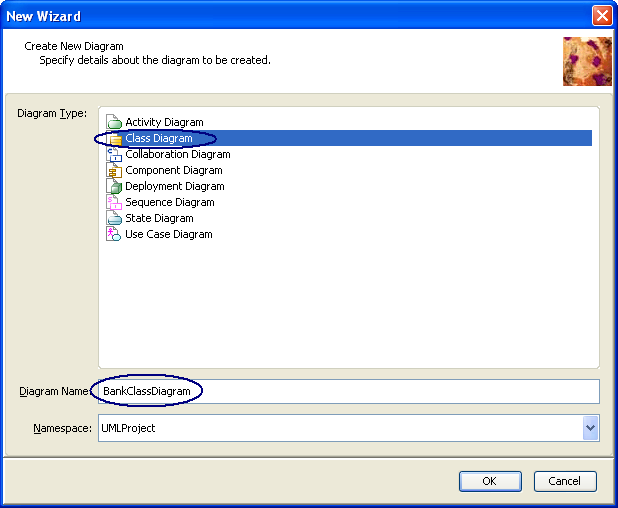
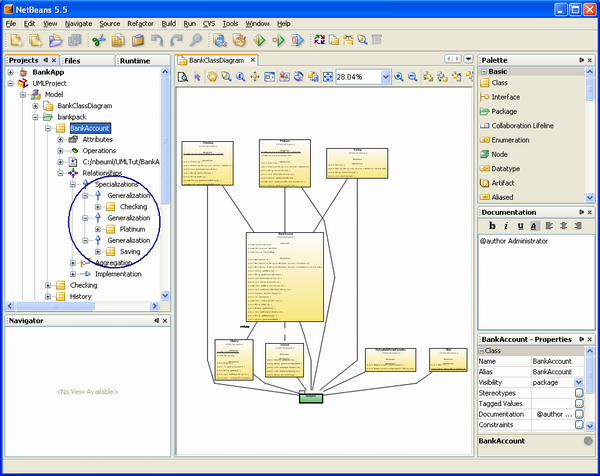
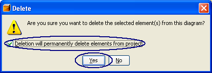
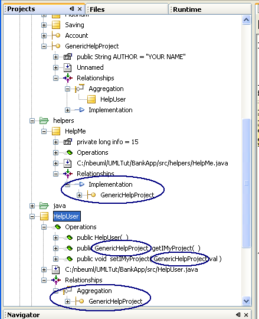

LAB-8105 NetBeans Enterprise Pack: Basic UML Modeling
The NetBeans IDE, in addition to providing support for developing IDE plug-in modules and rich client applications based on the NetBeans platform, contains the NetBeans Enterprise Pack 5.5 Preview software which in turn provides UML modeling, Orchestration Designer, and XML tools to the NetBeans community.
This Hands-on Lab takes you through the basics of using the UML Modeling component of the NetBeans Enterprise Pack 5.5 Preview. During this lab you will learn how to reverse engineer existing application, how to analyze and modify project using graphical UML diagram editor, and how to export a designed diagram image to an external presentation.
Expected duration: 95 minutes
Prerequisites
This exercise assumes you have a basic familiarity with the Java programming language and UML modeling. If you are new to UML, a good
resource for UML modeling techniques and theory is the official UML resource page at
http://www.uml.org/.
System requirements
This tutorial assumes your system meets the following requirements.
- Supported OS: Windows XP/2000, Solaris 8/9/10, Linux
- Memory: 512M minimun, 1024M recommended
- Disk space: 700M bytes
Software Needed for the Tutorial
Before you begin, you need to install the following software on your computer.
- Java Standard Development Kit (JDK) version 5.0 (download)
- NetBeans Enterprise Pack 5.5 (download).
Notations Used in the Tutorial
- <netbeans_install_directory> - directory into which you install
The NetBeans Enterprise Pack 5.5
- <lab_root> - directory into which lab zip file is unzipped.
- This document uses <lab_root> to denote the directory under
which you have unzipped the lab zip file of this handson lab. The name
of the lab zip file of this handson lab is 8105_nbeuml.zip.
- Once you unzipped the lab zip file under <lab_root>, it will
create a subdirectory called nbeuml. For example, under Windows, if you have unzipped
the lab zip file in the root of drive C:\, it will create C:\nbeuml.
Under Linux/Solaris, if you have unzipped the lab zip file in the $HOME
directory, it will create $HOME/nbeuml directory
Tutorial Exercises
Where to send questions
or feedback's on this lab and public discussion forums
- If you have any questions or feedback on this lab, please send them to
the following email alias. Please be advised that this alias is set up for
addressing issues/questions/feedbacks directly relevant to this lab not
for answering general questions on NetBeans Enterprise Pack 5.5 Preview.
- If you have general questions on NetBeans Enterprise Pack, please post
them to NetBeans Enterprise Pack forum.
Exercise 0: Starting Netbeans 5.5 (5 minutes)
In this exercise, you will learn how to start the Netbeans IDE.
Start NetBeans 5.5 Preview (if you have not done it
so yet)
- Under Windows, do one of the following:
- Double-click
on the NetBeans 5.5 Preview icon
from the desktop

- Select Start -> Programs -> NetBeans 5.5 Preview ->
Netbeans IDE 5.5.
- Under Solaris/Linux, type the following commands in a terminal window:
- cd <netbeans_install_directory>/bin
- ./netbeans
Exercise 1: Explore UML Model
In this exercise, you learn how to reverse engineer
the source code of a Java application into a UML Modeling project and learn
how model updates affect source and source updates affect model. In the UML
project all the classes and other application elements are represented in the
Projects window under the UML project node, while the original Java code remains
in its original state. This document walks you through several basic tasks as
indicated by the topic links listed under Contents. An application that contains
Java source files are already provided under <lab_root>/nbeuml/UMLTut
directory.
Steps to follow:
- Open existing Java project
- Create a UML project by reverse engineering
- Generate a Class Diagram
- Explore the UML project in the Projects window
- Explore the Diagram Editor
- Use the Overview Window
- Generate a Dependency Diagram for a Class
- Generate a Sequence Diagram for an Operation
Step 1: Open existing Java Project
- Choose File from the menu bar and then select Open Project.
- Browse to the <lab_root>/nbeuml/UMLTut directory and select bank project.
Click Open Project Folder.
Click to Enlarge
Step 2: Create a UML project by reverse engineering
- Choose File from the menu bar and then select New Project. The New Project dialog box appears.
- Under Choose Project pane, select UML under Categories and select Java-Platform Model by Reverse-Engineering a Java Project under Projects. Click Next.
Click to Enlarge
Note: You can create uml project from your sources another way by selecting Java-Platform Model project with turning on Generate Source on next wizard step
- Under Name and Location pane,
- For the Project Name field, enter UMLProject.
- For the Project Location field, click Browse to navigate to and select the UMLTut folder and click Open.
- Choose BankApp project in Java Project combobox.
-
We have no test packages in our java project and you may deselect test packages from Reverse Engineering process if you wish.
Note: You can't unselect both src and test packages, see next note also.
Note: Reverse Engineering process is closely correlated with model from source updates and source from model updates, see cases:
Case 1 (you have selected only src packages): model will be created only from packages and classes, interfaces located in src packages.
Only elements located in src packages will be updated with you work in uml project. Changes from src packages will be propagated to uml project. Changes in test packages will affect nothing in uml project.
Case 2 (you have selected only test packages): reversed to 1st case.
Case 3 (both set of packages was selected and both set exists in java project): all source changes from test and src packages will go to uml project, all change in model within test packages will go to test packages in source and all changes in model within src packages will go to src packages in source.
- Click Finish. Reverse engineering starts and progress bar shows the progress.
Click to Enlarge
- When the reverse engineering is done, click Done. The UMLProject project appears in the Projects window.
Click to Enlarge
Step 3: Generate a class diagram
- In the Projects tab window, under the UMLProject node, expand the Model node and expand the bankpack node under it.
- Select the bankpack folder and all the elements under the bankpack folder.
- Right-click the selected elements and choose Create Diagram From Selected Elements from the contextual menu.
Click to Enlarge
- In the Diagram Type list, select Class Diagram.
- Type BankClassDiagram in the Diagram Name field, leave UMLProject in the Namespace field and click OK. This action does the following:
- Creates a BankClassDiagram node under the Model node
- Displays the new diagram in the Diagram editor
- Opens the Modeling Palette

Step 4: Explore the UML project in the Projects window
- In the Projects window, working in the UML Project, under bankpack, expand the BankAccount node and its Attributes node.
All attributes of the BankAccount class are contained in this folder. If there are less than three attributes, the attributes appear under the class node without an Attributes folder.
- Select the Attribute node
labeled private double balance. The Properties window shows the name of the attribute and its properties.
Click to Enlarge
- Under the BankAccount class, expand the Operations node
. All the operations on the BankAccount class appear under this node.
- Under the BankAccount class, expand the Relationships node . Nodes for three types of relationships are displayed, Specialization's, Aggregation, and Implementation.
- Expand the Specializations node
 , then expand the three
Generalization nodes. The Generalization links show the relationship between BankAccount class to other elements (the Checking, Platinum, and Saving
classes).
, then expand the three
Generalization nodes. The Generalization links show the relationship between BankAccount class to other elements (the Checking, Platinum, and Saving
classes).

Click to Enlarge
- Before continuing to the next section, close the expanded nodes under the BankAccount class.
Step 5: Explore the Diagram Editor
- Double-click the BankClassDiagram tab at the top of the Diagram editor.
This action stretches the class Diagram editor to fill the entire IDE window space.
| |
This is a toggle: To reverse this action double-click the BankClassDiagram tab again. |
Click to Enlarge
- Stay in the expanded Diagram editor and click the Fit To Window button on
the Diagram toolbar to display the diagram completely in the expanded editor.
| |
Notice the zoom level percentage field in the Diagram toolbar. You can manipulate the size by typing different numbers in this field. |
Click to Enlarge
- Select the Symmetric Layout button
on the Diagram toolbar and click Yes in the Layout warning dialog box. The IDE arranges the BankClassDiagram diagram into a symmetric layout style.
Click to Enlarge
- Select the Hierarchical Layout button on the Diagram toolbar and click
Yes in the Layout warning dialog box. The IDE rearranges the BankClassDiagram diagram into a hierarchical layout style with all elements above the
Sample package.
Click to Enlarge
- Select the Orthogonal Layout button
on the Diagram toolbar and click Yes in the Layout warning dialog box. The IDE rearranges the BankClassDiagram diagram into a rectangular layout
style.
Click to Enlarge
Note: You can change layout by diagram context menu. It's also possible to customize layouts with Layouts > Properties context menu.
Step 6: Use the Overview Window
- Double-click the BankClassDiagram tab at the top of the expanded Diagram editor. The IDE returns to the multi-window view.
- Select 50% in the zoom combo box on the Diagram toolbar. The diagram expands so that you can read the labels better.
Click to Enlarge
- Click the Overview Window button
on the Diagram toolbar to open the Overview window. A small, scalable window displaying the entire diagram appears. A blue box in the window indicates what appears in the Diagram editor.
- Drag the blue box over the BankAccount element. This focuses the BankAccount element in the center of the Diagram editor.
- To zoom in on an element, click one of the handles at the corner of the blue box and decrease the size of the box. Adjust the location
of the box to zoom in on a specific part of the diagram.
Click to Enlarge
- To zoom out, click one of the handles of the blue box and increase the box's size. Notice that the IDE zooms out on the diagram.
- Close the Overview window by clicking the X in the upper right corner or by clicking the Overview Window button a second time.
Note: You can zoom in/out with CTRL+your mouse wheel.
Step 7: Generate a Dependency Diagram for a Class
- Double-click the BankClassDiagram tab to switch to the full view of the diagram.
- Right-click the BankAccount class in the Diagram editor and choose Generate Dependency Diagram from the contextual menu.
Click to Enlarge
The IDE creates a dependency diagram and opens a tab in the Diagram editor to display the new diagram. Your focus is now in the Diagram
editor tab showing the BankAccountDependencies diagram. The BankAccountDependencies diagram shows the following dependency links:
- Implementation relationship with the Account interface
- Navigable Aggregation link to the History class
| |
Using this option, you can create a diagram showing all the dependencies for any given object. |
Click to Enlarge
- Double-click the BankClassDiagram tab again to switch to the multi-window view of the IDE.
Under the BankAccount class node in the Projects window, you see that a BankAccountDependencies node  has been added representing the Dependency diagram you just created.
has been added representing the Dependency diagram you just created.
Click to Enlarge
Step 8: Generate a Sequence Diagram for an Operation
- Select the BankAccount element in the BankAccountDependencies Diagram editor and adjust the zoom so that you can easily read the operation labels.
Click to Enlarge
- In the Diagram editor, right-click the withdraw operation and choose Reverse Engineer Operation from the contextual menu. The New
Wizard dialog for creating a new diagram appears.
Click to Enlarge
- In the Diagram Type list, select Sequence Diagram.
- In the Diagram Name field, type withdrawSD.
- Accept the default value in the Namespace field and click OK. A sequence diagram appears in the Diagram Editor.
- Expand the Diagram editor and manipulate the zoom level so that you can easily examine the new sequence diagram. The sequence
diagram shows the control flow, the sequence of behavior, and the concurrent processes and activations.
Click to Enlarge
- In the Projects windows, under the BankAccount class node, expand the Operations node, then expand the public void withdraw operation node. You see the new withdraw
sequence diagram node .
- Expand the withdraw node to see the elements of the sequence diagram represented in the Projects window.
Click to Enlarge
Exercise 2: UML Model modification
In this exercise you will learn how to modify
UML model directly or using graphical diagram. You will see that all changes in
connected java and UML projects are synchronized.
Steps to follow:
- Model Modification
- Source Modification
- Using Refactoring
- Model updating from Project Tree
Step 1: Model Modification
- Activate BankClassDiagram diagram by click on diagram's tab or by double click in project tree.
- Open UML Palette (if closed) with main menu Window > Palette.
- Select Interface in palette.
- Click left mouse button in free space of diagram area.
You'll get new interface element in your model.
Click to Enlarge
Note: until element has default name no source is associated with the element, default name is Unnamed by default, you can change default name in UML options.
Note: elements are placed to diagram's package you can drag element to another package in project tree or draw nested link from your element to some package on diagram
- Select the interface element (if not selected).
- Type name IMyProject and press Enter.
now you have default source for IMyProject interface in your java application.
Note: if you start typing just after selection old name will be replaced with new one, in you need only a minor correction for the name you should double click on the name to enter edit mode.
- Select Nested Link in UML Palette.
- Click on IMyProject interface.
- click on bankpack package.
Now new interface is located in basic package (in model and in java project).
Click to Enlarge
- Deselect Nesting Link tool bu right mouse button click (or by ESC).
- Select 100% in the zoom combo box and scroll diagram area to IMyProject interface.
- Invoke Context menu on Attributes title within the interface.
Click to Enlarge
- Click on Insert Attribute menu item.
Attribute with default name was added to model, no source is associated with the attribute until one has default name.
- Delete default name (with backspace) and delete default attribute type (int)
- Type String as attribute type and AUTHOR as default name, press = and type "YOUR NAME", press Enter.
Now you have attribute in model and in source and any modification of attribute in model will affect source code.
- Invoke Navigate To Source from context of interface element.
You'll see the source for new interface.
package bankpack;
public interface IMyProject {
public static final String AUTHOR = "YOUR NAME";
}
Note: You can use Navigate To Source from element node's in uml project in project tree also or access source from java project directly.
- Activate BankClassDiagram diagram tab.
- Add class to the diagram(use palette) and name it with Utils name.
- Move Utils to bankpack package.
You should see Utils.class in bankpack package in java project with default source (with default constructor).
package bankpack;
public class Utils {
public Utils() {
}
}
Note: You can add new class or interface to model with project tree by invoking contexn menu for desired package and selection Add > Element item. You can drag element from project tree to diagram after creation.
- Activate BankClassDiagram diagram tab.
- Select the Orthogonal Layout button
on the Diagram toolbar and click Yes in the Layout warning dialog box.
- Select Utils class on diagram.
Note: You can find Utils class by invoking Edit > Find in Model... from main menu. Just type Utils to Find what textbox and press find. You may double click on search result and corresponding diagram will be opened and Utils class will be selected on the diagram. Close Find Dialog to continue with next steps.

Click to Enlarge
- Press Delete key.
- Confirm object deletion (do not uncheck checkbox).

The class is removed from model (from project tree and all digrams), the class is removed from java project too.
Note: You can remove attributes, operations from model and source by selection and Delete pressing or invokation of Delete from context menu.
Note: Be careful, If you are going to remove package from diagram with remove from model options on, all content of the package will be removed from model and java project (if your diagram is located in the package the diagram will be removed too).
- Invoke Add > Package in context menu of Model node.
- Type temp package name in new wizard.
- Select Create Scoped Diagram checkbox.
- Press OK.
Package with scoped diagram appears in model. Diagram is opened after creation. Empty package isn't propagated to java project.
- Select Class in Palette.
- Click in temp diagram area.
New Unnamed class appears.
- Type name A and click in free diagram area.
First class was named with name A and second unnamed clas appears.
- Name class B and create 3rd class C.
All classes appears on diagram, in project tree and in java project.
Click to Enlarge
- Select Generalization link in Palette.
- Click on C class on diagram.
- Click on A class on diagram.
Generalization relationship appears on diagram, uml project tree and propagates to java project.

Click to Enlarge
package temp;
public class C extends A {
public C() {
}
}
- Select Navigable Aggregation link in Palette.
- Click on class C on diagram.
- Click on class B on diagram.
Navigable Aggregation appears on diagram, model tree and propagates to java project. Accessors are created in model and in source.
Click to Enlarge
package temp;
public class C extends A {
private B mB;
public C() {
}
public B getB() {
return mB;
}
public void setB(B val) {
this.mB = val;
}
}
- Select temp package in project tree.
- Invoke Delete from context menu.
- Say Yes in Confirmation dialog for object deletion.
- Say Yes to delete package confirmation.
- Say Yes to additional confirmations which may appears for separate elements.
temp package with all content including classes and class diagram is removed from uml project. test package with nested classes is removed from java project. All tabs for removed diagram and classes are closed.
Step 2: Source Modification
- In Java Project add helpers package.
Empty package appears in java project but doesn't propagate to uml project.
- Add Class HelpMe to the package.
helpers package and HelpMe appear in model, you can drag the class and package to your diagrams or modify the class/package within uml project.
- Activate BankClassDiagram diagram.
- Drag the class to the diagram.
Click to Enlarge
- Activate source tab.
- Add new method to HelpMe class (in source).
public int getSomeID()
{
return 0;
}
The method appears in model within HelpMe node and on diagrams (Activate BankClassDiagram if you want to see the result on diagram).
Click to Enlarge
- Add attribute to HelpMe class (in source).
private long info=15;
Accessors are generated in source. Attribute and accessors are propagated to model.
Click to Enlarge
- Add
import bankpack.*;
to HelpMe class source.
- Add
implements IMyProject
to HelpMe declaration.
Relationship is propagated to model.
- Activate BankClassDiagram tab.
- Press Relationship Discovery toolbar button.
Relationship should appears on diagram.
Click to Enlarge
Step 3: Using Refactoring
- Add new Class Element on BankClassDiagram diagram.
Name it HelpUser.
Class element appers on Diagram and in model.
- Select Navigable Composition link in Palette.

- Click on class HelpUser on diagram.
- Click on class IMyProject on diagram.
Navigable Composition appears on diagram, model tree and propagates to java project.
Accessors are created in model and in source.
Click to Enlarge
- Double-click on IMyProject name witin IMyProject diagram element to open it's name editor.
Now you can type new name of class.
- Rename IMyProject interface to GenericHelpProject.
Interface element on Diagram, in model and in source is renamed.
Click to Enlarge
package bankpack;
public interface GenericHelpProject {
}
- After element renaming Refactoring is used automatically to rename usages visible on diagram:
Element is displayed as parameter and return type for accessor methods generated by Composition link.
Click to Enlarge
Element usages in model are also renamed:
In generalization and in accessor methods generated by Composition.

- Open source file for HelpMe class.
Renamed interface usage in extend clause is also renamed.
Click to Enlarge
Open source file for HelpUser class.
Usages in Attribute type and accessor methods are renamed.

Step 4: Model updating from Project Tree
- Click with right mouse button on helpers directory node in UML project tree.
In opened context menu select 'Add | Element'
- In opened Wizard select Class Element type.
Type HelpThem in Element Name field.
And press OK button.
- New Class node HelpThem is created.
Expand Created class node to see created constructor.
Drag and Drop HelpThem class from tree to Diagram.
Click to Enlarge
- Open context menu for Class node in tree and invoke 'Add | Attribute' command
New 'private int Unnamed' attribute is created.
- Open context menu for created attribute node
Invoke Rename... command.
- Type new name theirInfo
and press OK button
- Attribute is renamed.
Accessor methods are created.
Click to Enlarge
- Open Properties for theirInfo attribute node.
- In Type value drop-down change int to History : bankpack
Click to Enlarge
Close Properties window.
- Attribute type is changed.
Note that type used in accessor methods is also changed.
Click to Enlarge
- Open context menu for Class node and invoke 'Add | Operation' command
New 'public void Unnamed()' operation is created.
- Open context menu for created operation node
Invoke Rename... command.
Type new name setTheirNames
and press OK button
Operation is renamed.
Click to Enlarge
- Open Properties for setTheirNames operation node.
- Click on '...' button to customize Parameters value.
Click to Enlarge
- In opened 'public void setTheirNames( ) - Parameters' dialog press New Parameter... button.
Set parameter name to 'name1'. Change type to String.
Click to Enlarge
Press OK button.
- Add another parameter of the same type with the name 'name2'
Click to Enlarge
Press OK button in dialog and close Properties window.
Changes appear in class element.
Click to Enlarge
Exercise 3: Graphics Exporting
One of possible usages of created graphical diagram
is using it in external documents like presentations and specifications.
This Excercise will show you how to export diagram graphics.
Steps to follow:
- Exporting Image
- Direct Graphics Copy to presentation
Step 1: Exporting Image
- Click on 'Export as image' button on UML diagram toolbar.
- 'Export as image' dialog window is opened.
Select image type and location
- Select image Quality
Select custom size radio-button
set Width to 800. Height will be set automatically to preserve sides ratio.

And press OK.
- Exported image is the following:
Click to Enlarge
Step 2: Direct Graphics Copy to presentation
Note: To Follow this step you will need Office tool for creating presentations. e.g. StarOffice Impress or StarOffice Writer
- Zoom diagram to the size you want it to be in your presentation.

- Select elements on diagram using 'Edit | Select All' context menu item.
Click to Enlarge
- Right-click on selected area and invoke 'Edit | copy' command from diagram context menu.
Click to Enlarge
- Open target presentation document
And select paste action.
Image with selected diagram elements is pasted to the document.
Click to Enlarge
Summary:
In this exercise, you learned how to reverse engineer a Java application by importing its data into a UML model. You learned how to perform the following tasks:
- Generate a class diagram from the imported application
- Explore the features of the Projects window for representing the elements of the application
- Use the buttons of the Diagram toolbar to view the application in various UML layouts
- Use the Overview Window as a viewing tool
- Generate a dependency diagram for one of the application's classes
- Generate a sequence diagram for an operation
- Addition of new elements to model and understanding model relation with source
- Understanding of automatically used refactoring impact during diagram elements modification
- Project modification from from UML project tree
- Export diagram image
- Direct copy diagram image to presentation
For more information on NetBeans Enterprise Pack UML Modeling, consult the online help from the IDE and visit the NetBeans Enterprise Pack Developers Resource portal for tutorials, videos, and other resources
on UML modeling.
Next Steps
To send comments and suggestions, get support, and keep informed on the latest
developments on the NetBeans IDE J2EE development features, join the nbusers@netbeans.org
mailing list.


{kind=link}
{kind=link}
{kind=link}
{kind=link}
{kind=link}
{kind=link}
{kind=link}
{kind=link}
{kind=link}
{kind=link}
{kind=link}
{kind=link}
{kind=link}
{kind=link}
{kind=link}
{kind=link}
{kind=link}
{kind=link}
{kind=link}
{kind=link}
{kind=link}
{kind=link}
{kind=link}
{kind=link}
{kind=link}
{kind=link}
{kind=link}
{kind=link}
{kind=link}
{kind=link}
{kind=link}
{kind=link}
{kind=link}
{kind=link}
{kind=link}
{kind=link}
{kind=link}
{kind=link}
{kind=link}
{kind=link}
{kind=link}
{kind=link}
{kind=link}
{kind=link}
{kind=link}
{kind=link}
{kind=link}